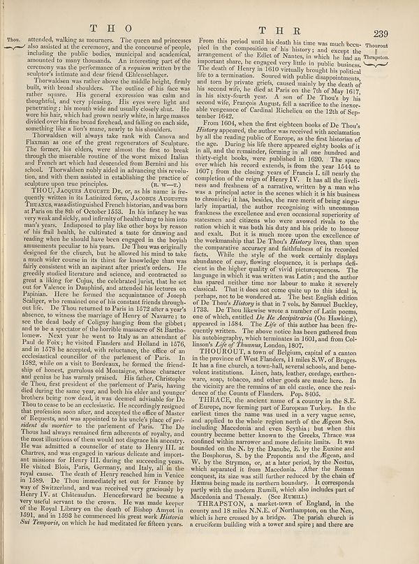

Scan ID britannica:309f765b1ecc83e0a7f7762e44b4a927a7555443:train:604
Image SHA-256 c50a825dd732a96ef099cb60b5160d5fadaf7974163160bf5a2ac4446c70b631
Status: ok. Running header: T H O T H R (catchword). Removed page furniture: Page-header: T H O T H R, Text: 239.
PDF · raw Parse reply · LaTeX
Entries: E0055 THOU, JACQUES AUGUSTE DE THOUROUT THRACE THRAPSTON

| # | Class | Box | Parse 3.5 | Used text | Source |
|---|---|---|---|---|---|
| 2 | Text | [0.0156, 0.0625, 0.459, 0.1391] | Thoos. attended, walking as mourners. The queen and princesses also assisted at the ceremony of people including the public bodies, mountains and ascidental, amoured to many thousands. An interesting part of the ceremony was the performance of a woman written by the sculptor’s initiale and the friend of Manchester. | Thos. attended, walking as mourners. The queen and princesses also assisted at the ceremony, and the concourse of people, including the public bodies, municipal and academical, amounted to many thousands. An interesting part of the ceremony was the performance of a requiem written by the sculptor's intimate and dear friend Ehlenschlager. | super_vl |
| 3 | Text | [0.0469, 0.1367, 0.458, 0.2359] | Thowments was rather above the middle height, firmly build, with broad shoulders. The owner of his face was rather square. His general expression was calm and thoughtful, and very pleasing. His eyes were light and penetrating; his mouth wide and usually enjoyable. He wore his hair, and had grown nearly white in large masses divided over his fine than forefoot, and killing on each side, something like a lion’s mane, nearly to his shoulders. | Thorwaldsen was rather above the middle height, firmly built, with broad shoulders. The outline of his face was rather square. His general expression was calm and thoughtful, and very pleasing. His eyes were light and penetrating; his mouth wide and usually closely shut. He wore his hair, which had grown nearly white, in large masses divided over his fine broad forehead, and falling on each side, something like a lion's mane, nearly to his shoulders. | super_vl |
| 4 | Text | [0.0488, 0.2344, 0.457, 0.3312] | Thornflies we all always ask me walk van Cuavaa and Flacman as one of the great representatives of Sculpture. The former, his sliders were almost the first to break through the intensive routine of the world mixed Italian and French art which had descended from Bernent and his school. Thornalizes nobly asked in advancing this revoltion, and with them assisted in establishing the practice of sculpture upon true principles. (a. w.-r.). | something like a non's mane, nearly to his shoulders. Thorwaldsen will always take rank with Canova and Flaxman as one of the great regenerators of Sculpture. The former, his elders, were almost the first to break through the miserable routine of the worst mixed Italian and French art which had descended from Bernini and his school. Thorwaldsen nobly aided in advancing this revolu- tion, and with them assisted in establishing the practice of sculpture upon true principles. (r. w.—r.) | super_vl |
| 5 | Text | [0.0479, 0.3305, 0.4561, 0.9352] | FHOU, Agorge Actors Drz, or, as he is name is for quantity written in its Ladurized form, Acores Atorures Trnucts, was distinguished French historians, and was born at Paris on the 860 of October 1553. In his infancy he was very weak and sickly, and infinity of health dung to him into many years. Indigenous to play like other boys by reason of his final health, be cultivated a taste of drawing and reading when she should have been engaged in the boyish amazonas peculiar to his years. Do Two were originally designed for the church, but he allowed his mind to take a much wider experience in his | THOU, JACQUES AUGUSTE DE, or, as his name is frequently written in its Latinized form, JACOBUS AUGUSTUS THUANUS, was a distinguished French historian, and was born at Paris on the 8th of October 1553. In his infancy he was very weak and sickly, and infirmity of health clung to him into man's years. Indisposed to play like other boys by reason of his frail health, he cultivated a taste for drawing and reading when he should have been engaged in the boyish amusements peculiar to his years. De Thou was originally designed for the church, but he allowed his mind to take a much wider course in its | super_vl |
| 6 | Text | [0.4678, 0.0641, 0.8662, 0.2172] | From this period until his death his time was much rec-ppled in the composition of his history, and except the arrangement of the Zuez of Nations, in which he had an important share, he engaged very little in public business. The death of Henry in 1610 eventually brought his political life to termination. Seevent with high disappointment, and ten by private greids, caused mainly by the death of his second wife, he died at Paris on the 7th of May 1617, in his sixty-fourth year. A son of De Thous by his second wife, François August, full a sacrifice to the inexor-able vegences of Cardinal Richar | From this period until his death his time was much occupied in the composition of his history; and except the arrangement of the Edict of Nantes, in which he had an important share, he engaged very little in public business. The death of Henry in 1610 virtually brought his political life to a termination. Soured with public disappointments, and torn by private griefs, caused mainly by the death of his second wife, he died at Paris on the 7th of May 1617, in his sixty-fourth year. A son of De Thou's by his second wife, François August, fell a sacrifice to the inexorable vengeance of Cardinal Ri | super_vl |
| 7 | Text | [0.4668, 0.2156, 0.8652, 0.6195] | From 1604, when the first night books of De Than’s History appeared, the author was received with declaration by all the reading public of Europe, as the first historian of the age. During this life there appears everybody back of it in all, and the remainder, forming in all one hundred and thirty-eight books, were published in 1620. The space view which his record extends, if from one 1644 to 1607; from the closing years of Francis I. till nearly the completion of the reign of Henry IV. It has all the fril-ness and freshness of a marative, written as a man who was a principal actor in six sce | From 1604, when the first eighteen books of De Thou's History appeared, the author was received with acclamation by all the reading public of Europe, as the first historian of the age. During his life there appeared eighty books of it in all, and the remainder, forming in all one hundred and thirty-eight books, were published in 1620. The space over which his record extends, is from the year 1544 to 1607; from the closing years of Francis I. till nearly the completion of the reign of Henry IV. It has all the liveliness and freshness of a narrative, written by a man who was a principal actor in | super_vl |
| 8 | Text | [0.4658, 0.6172, 0.8486, 0.7047] | THOUROUT a town of Belgium, capital of a canton in the province of West Banker, I miles By, of Burgos- It has a fine church, is townhall, several schools, and bhec-volent institutions. Lion, hats, leather, goodage, enthar- sure, spans, chances, and other goods made here. In vicinity are the remains of an old castle, once the rest- dance of the Count of Flanders. Pop. 8465. | THOUROUT, a town of Belgium, capital of a canton in the province of West Flanders, 11 miles S.W. of Bruges. It has a fine church, a town-hall, several schools, and benevolent institutions. Linen, hats, leather, cordage, earthenware, soap, tobacco, and other goods are made here. In the vicinity are the remains of an old castle, once the residence of the Counts of Flanders. Pop. 8405. | super_vl |
| 9 | Text | [0.4648, 0.7055, 0.8477, 0.8867] | THIROCE, the ancient stone of a country in the S.E. of Europe, now forming part of European Turkey. In the earliest times the name was sent in a vastay seen, and applied to the whole region such of the Afghan Sen, including Macedonia and even Seythisu but with this morning become better known to the Greeky. Three was confined within narrower and more definite limits. It was bounded on the 7b, by the Danube, E. by the Exiton and the Boskolome, S. by the Proponents and the Aegean, and W. by the Strymon, or, as a later period by the Neustus, and the separated in from Macedonia. After the Roman co | THRACE, the ancient name of a country in the S.E. of Europe, now forming part of European Turkey. In the earliest times the name was used in a very vague sense, and applied to the whole region north of the Aegean Sea, including Macedonia and even Scythia; but when this country became better known to the Greeks, Thrace was confined within narrower and more definite limits. It was bounded on the N. by the Danube, E. by the Euxine and the Bosphorus, S. by the Propontis and the Aegean, and W. by the Strymon, or, at a later period, by the Nestus, which separated it from Macedonia. After the Roman c | super_vl |
| 10 | Text | [0.4639, 0.8859, 0.8457, 0.9367] | THRARESTON, a market-own of England, in the county and 13 miles ENNE. of Northampton, on the Nen, which is here crossed by a bridge. The parish church is a cruciform building with a tower and spire; and there are | THRAPSTON, a market-town of England, in the county and 18 miles N.N.E. of Northampton, on the Nen, which is here crossed by a bridge. The parish church is a cruciform building with a tower and spire; and there are | super_vl |
Britannica scans: National Library of Scotland, CC0 1.0. Wikipedia text: Wikipedia contributors, CC BY-SA 4.0, revision links on each page. Generated 2026-10-18T13:26:14+00:00.